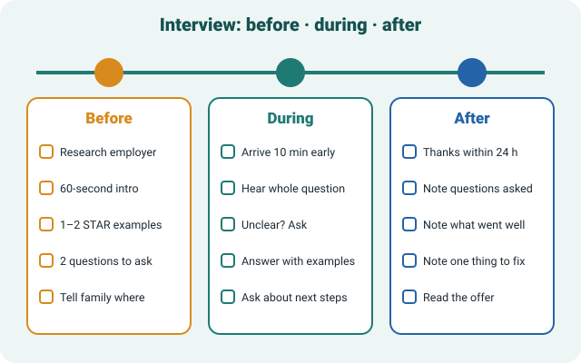

K2 · Speaking and writing clearly › Level 2 Starting
Prepare your first interview in three stages, before, during and after
This lesson completes Sheet 4: Interview preparation sheet. Print template.
1. Objectives
- Give a 60-second introduction in 3 points: now, what you have done, why this place.
- Prepare 2 questions to ask and send a thank-you message within 24 hours.
2. Retrieval warm-up
- What are the five parts of a one-page CV?
- Rewrite this line using the formula: "Member of the school drama group."
Answers
- Contact, objective, education, activities and experience, skills with evidence.
- For example: "Directed a 6-person dance piece that won third prize at the school arts festival." Verb + task + result.
Review: One-page CV.
3. Explanation
Interviews for part-time work or internships are usually short, about 15–30 minutes. The employer wants to know three things: can you do the work, can they trust you, and do you fit the place. Prepare in three stages.

Before. Spend 15 minutes researching the employer: what they sell, who their customers are, opening hours. Practise your 60-second introduction:
The 60-second introduction
- NowWho you are, what you are studying.
- DoneOne or two relevant things, with results.
- Why hereOne specific reason about this employer.
Choose 1–2 CV lines and prepare to tell them as STAR examples. Write down 2 questions to ask, meaning questions you ask the interviewer. For example: "What do people who do well in this role do differently?"
Safety: interview only at a place with a clear address. Tell someone at home where you are going. If you are under 18, bring someone from home.
During. Arrive 10 minutes early. Hear the whole question before answering. If it is unclear, ask: "Do you mean experience at school or in part-time work?" Answer with examples, not just "I can do it". At the end, ask: "When will I hear the result?"
After. Within 24 hours, send a short thank-you that mentions one thing you look forward to doing. Note the questions you were asked, one thing you did well, and one thing to fix.
If you get an offer, read the tasks, shifts, pay and probation period carefully before you accept. If you are not hired, ask for brief feedback to do better next time.
4. Workplace example
Hypothetical scenario. Mia is invited to interview for the cashier job at the mini-market.
Mia's introduction, about 50 seconds:
"I'm Mia, a second-year business student. This past year I was treasurer for my class of 45, publishing income and spending every month with no errors. I also sold goods at my faculty fair, taking payments from about 150 customers. I chose your store because it is close to my dormitory. I can reliably work evenings and weekends."
Mia's two questions: "When is the evening shift usually busiest?" and "What will I learn in my first week?"
That evening, Mia writes: "Thank you for your time at this afternoon's interview. I'd really like to work the evening shift at your store. I look forward to hearing from you."
Why this works: the introduction has numbers and a specific reason. The questions show Mia has thought about the real work.
5. Practice
Hypothetical scenario. Leo interviews for evening IT support at the computer shop. The interviewer says: "Tell me briefly about yourself."
Write Leo's 60-second introduction, using the details from the last lesson. Also write 2 questions to ask and a thank-you message.
Hint 1
For point 2, "Done", pick the most relevant work: reinstalling computers for 6 people and showing them how to use them.
Hint 2
Good questions are about the real work: common faults customers bring in, how newcomers are trained.
Model answer
"I'm Leo, a first-year accounting student. I've reinstalled the operating system and office software for 6 people I know. Afterwards, I showed them how to use everything. On enrolment day, I staffed the help desk and answered about 100 new students. I chose your shop because I want real technical work, and I'm free every evening."
Questions: "What faults do customers bring in most often?" and "How long are new staff usually supported by someone?"
Thank-you: "Thank you for interviewing me today. I'd love to learn repair work at your shop. I look forward to hearing from you."
(Details are hypothetical, for illustration.)
6. Self-check
Choose an answer. Every option has an explanation.
Question 1. Which introduction follows the 3 points: now, done, why this place?
-
Not quite. It has only personal facts, with nothing you have done and no reason for choosing this place.
-
Correct. Correct. All 3 points, with specific work and a specific reason.
-
Not quite. The employer still does not know who you are or what you can do.
Question 2. Which question to ask the interviewer is best?
-
Not quite. You can ask about time off, but your first question should show interest in the work.
-
Correct. Correct. It shows you have thought about the real work and want to learn.
-
Not quite. You miss a chance to show interest and to get more information.
Question 3. The interviewer asks a question you do not fully understand. What should you do?
-
Not quite. You may answer off-topic. The employer will think you did not listen.
-
Correct. Correct. Asking when something is unclear is good listening, not a weakness.
-
Not quite. Silence breaks the flow of the interview and costs you points.
Question 4. A 16-year-old is invited to an evening interview at an unfamiliar address. What is the safest approach?
-
Not quite. An unfamiliar address, the evening and being under 18 are three reasons for extra care.
-
Correct. Correct. A genuine employer will happily agree a clear time and place.
-
Not quite. Always tell someone at home where you are going, especially if you are under 18.
7. Reflection
- Which interview question are you most afraid of? What real example could you use to answer it?
- When you say your introduction aloud, where do you stumble? Why?
8. Real-world application
In the next 7 days, say your 60-second introduction aloud 3 times, with a timer. The third time, say it to a friend and ask for one piece of feedback. Complete Sheet 4.
9. Metadata
| skill | K2 · Speaking and writing clearly |
|---|---|
| level | Level 2 · Starting |
| group | N2 |
| framework_map | CSfW: 2a Communicate for work; SkillsFuture CCS: Communication; Influence; NACE: Communication; Professionalism (reference only) |
| original | Vietnamese version |
| updated | 2026-11-14 |
Finish the lesson
Mark it as done and the site suggests reviews after 1, 3 and 7 days. The data stays on your device only.
Suggested reviews: